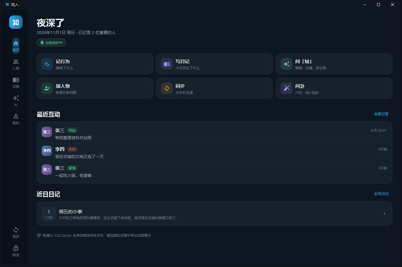
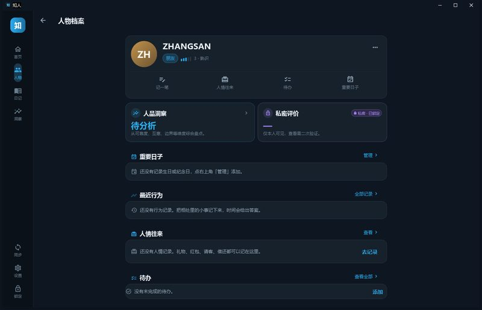
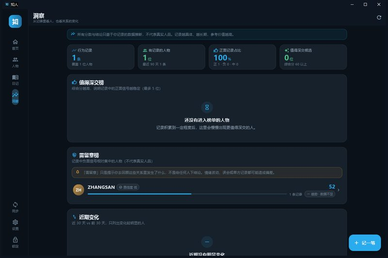
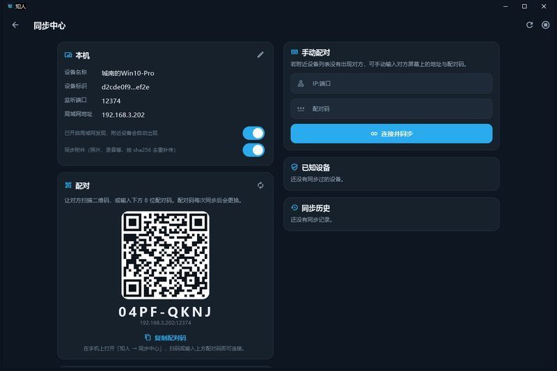
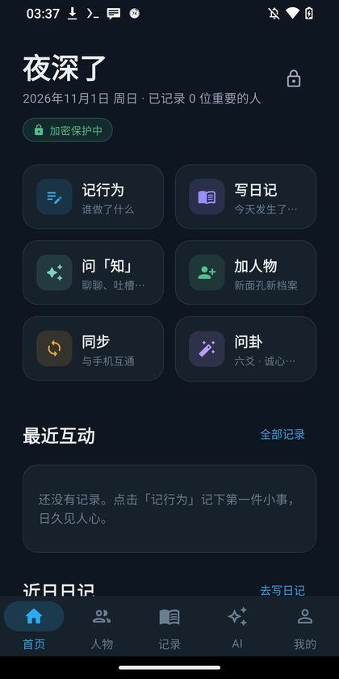
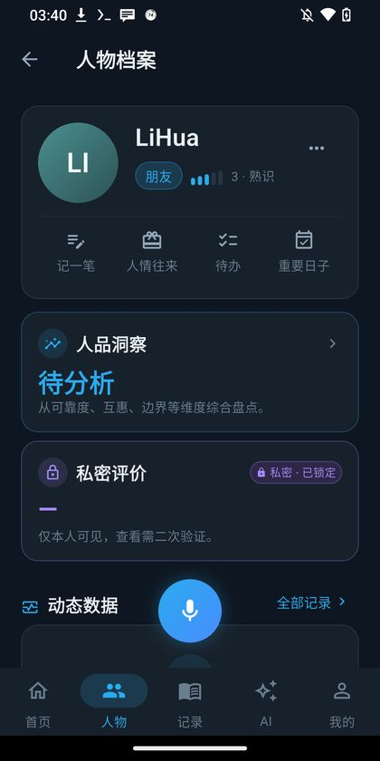

记住那些
值得记住的人
有些细节值得记下来：谁在你难受的时候问过一句，谁答应的事真的做到了， 谁让你一次次失望。知人把这些小事存好，等你想不清楚一个人时，翻出来慢慢看。

桌面端 · 深色 Telegram 风 · 所有内容仅本机可见
记录，而不是评判
大多数社交产品在收集你的关系，知人只帮你把关系看清楚一点。它不做通讯录， 不做社交网络，也不上传任何内容。
把「人」当作档案来经营
人物档案、行为记录、日记、人情往来、重要日子，都在一个地方。 记一次「他帮我改完了方案」，比记住一个模糊的好感更有用。
数据只存在你自己的设备上
没有账号、没有服务器、没有云端同步。数据库用 SQLCipher 整库加密， 离开这台设备，文件只是一堆无法识别的字节。
洞察是参考，不是结论
六维画像与「值不值得深交」全部基于你的本地记录与规则推断， 附置信度、依据事件与免责声明。它提醒你多看几眼，而不替你下判断。
核心功能
从一笔记录开始，慢慢积累成一份只属于你的关系档案。
人物档案
姓名昵称、关系、亲密度、标签、生日、相识经历，以及国内常用社交平台。
- 微信 / QQ / 小红书 / 抖音 / B站 / 微博 / 知乎
- 生日支持未知年份与农历标记
- 照片、宠物、待办、重要日子关联
行为记录与时间线
记住「什么时间、发生了什么、你的感受如何」，好坏、权重、方向都记下来。
- 按人 / 全局时间线，会话流式浏览
- 六维画像：可靠、互惠、边界、情绪、真诚、支持
- 趋势、正负事件摘录与置信度
日记 · 语音 · 智能提取
写日记，也可以直接说。离线中文模型断网可用，人名同音字自动纠正。
- 日历回看、「往日今日」、全文搜索
- 自动识别「谁做了什么」生成待确认提案
- 可配置在线转写作为增强
人情往来与提醒
礼物、红包、请客、借款与归还，按人汇总净往来，不让心意变成糊涂账。
- 金额精确到分，可标记是否已还 / 回礼
- 生日、纪念日、自定义日子提前提醒
- 与人物关联的待办清单
AI 聊天「知」与六爻问卦
能打字，也能像打电话一样聊。AI 默认关闭，开不开、能读什么都由你决定。
- Live 实时语音：边听边答，字幕同步
- 可以给 AI 起名字、设人设、逐项数据权限
- 六爻起卦、装卦与解卦完全本地计算
安全与同步
全库加密、隐藏空间、生物识别，以及不经过服务器的局域网直连同步。
- SQLCipher + Argon2id 主密钥派生
- X25519 握手 + ChaCha20-Poly1305 传输
- 记录级合并、删除墓碑、附件去重补传
界面一览
克制、安静的深色界面。没有浮夸的动效，只有需要的信息。





截图为 v1.4.0 实际界面，演示数据均为虚构。
你的数据，不需要交给任何人
知人没有后端服务器。所有内容在写入磁盘前完成加密，同步也只发生在你自己的两台设备之间。
整库加密
SQLCipher 全库加密，数据库文件头为随机字节；在文件里搜索不到姓名与评价原文。
主密码派生
主密码经 Argon2id 派生密钥后才用于解密，只在本机内存中出现，不落盘、不上传。
隐藏空间
独立数据库与独立密码，普通模式下完全不会打开。第二个库对第一个库不可见。
私密评价
负面评价用独立隐私密钥二次加密，查看前必须再次验证，失焦自动遮蔽。
点对点同步
X25519 临时密钥协商 + 配对码校验 + ChaCha20-Poly1305 传输，不经过任何服务器。
AI 权限可控
AI 默认关闭。开启后可以逐项决定它能读日记、互动记录还是人物资料，随时收回。
提示：忘记主密码且丢失恢复密钥时，数据无法恢复——这是加密设计的一部分。 建议定期在「设置 → 数据」导出加密备份。
系统要求
| Windows | Windows 10 / 11（64 位）；约 300 MB 可用磁盘空间；首次运行需选择数据目录（建议非系统盘）。 |
|---|---|
| Android | Android 8.0 及以上；arm64 / arm 设备；约 400 MB 可用空间；安装时需允许「安装未知应用」。 |
| 局域网同步 | 两台设备连接同一 Wi-Fi；Windows 首次使用时需在防火墙提示中允许「专用网络」；路由器开启 AP 隔离时可用手动 IP 连接。 |
| 离线语音 | 需在「设置 → 语音与 AI」下载离线模型（约 71 MB 或 488 MB），断网可用；未下载时可降级为在线转写或纯文字。 |
| AI 增强 / Live 语音 | 可选，默认关闭。需自行填写 OpenAI 兼容接口的 baseUrl、API Key 与模型名；Live 语音还需要麦克风权限与系统朗读（TTS）引擎。 |
常见问题
更多问题（下载速度、安装、数据迁移、同步排查）见下载页。
真的完全不上传数据吗？
换电脑或换手机，数据怎么迁移？
.zhiren 加密备份，在新设备导入。备份文件使用独立口令加密，可跨设备还原。